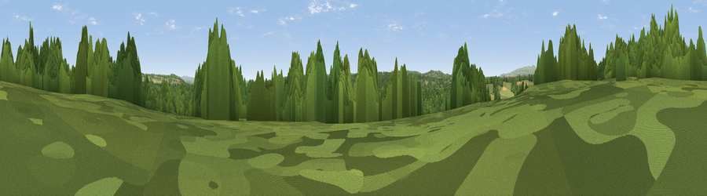

Viewpoint near Upper Arley
#41393 in England · top 93% of its area beats it · near Upper ArleyThe view, rendered

A 360° render of this exact spot computed from the terrain model, tree cover and land cover — summer colours, afternoon light, calibrated against photographs of famous viewpoints. Real trees, hedges and buildings will differ in detail.
The panorama
Grey silhouette: terrain skyline in each direction (720 bearings, Earth curvature and refraction included). Dashed green: skyline with trees (+15 m) and buildings (+8 m) as obstacles. Blue strip: how far the ground is visible on each bearing.
Where the view opens
Wedge length = distance to the farthest visible ground on that bearing (vegetation-aware). Rings at 10, 25 and 50 km.
What fills the view
71% woodland · 23% grassland · 5% cropland · 1% built-up
Angular shares of the visible panorama (visual magnitude), not map area. Landscape diversity 0.34 (0–1 Shannon).
Key numbers
More beautiful places nearby
The staircase of upgrades: each row has a higher view potential than everything closer. Driving times are estimates from straight-line distance, calibrated against real road routing — check an actual route before setting out.
| Place | Direction | Drive | Score |
|---|---|---|---|
| Viewpoint near Neen Savage | WNW · 4 km | ~10 min | 58.2 |
| Viewpoint near Upper Arley | ENE · 4 km | ~10 min | 61.7 |
| Viewpoint near Ferndale | E · 5 km | ~11 min | 71.7 |
| Knowle Hill | NW · 7 km | ~14 min | 75.5 |
| Abberley Hill | S · 10 km | ~20 min | 80.4 |
| Woodbury Hill | S · 13 km | ~24 min | 81.6 |
| Viewpoint near Great Witley | S · 13 km | ~24 min | 83.4 |
| Titterstone Clee | W · 15 km | ~27 min | 83.8 |
52.39470, -2.37359 · source: screening · position refined by local search. Computed location — check access rights before visiting.